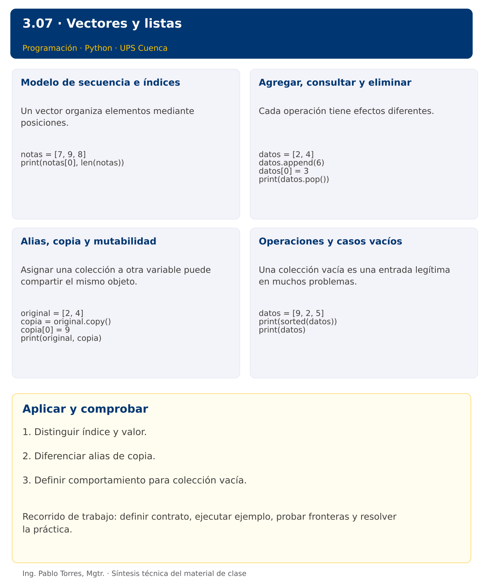

Programación

3.07 · Vectores y listas · Java
Autor: Ing. Pablo Torres, Mgtr.
Unidad 3: Lenguaje de Programación
Índice del curso · Versión Python · Presentación Python · Anterior · Siguiente
Conceptos · Demostración · Práctica de clase · Lo esencial
Contexto. Guardar varias mediciones permite consultarlas y transformarlas sin crear una variable por observación. Elegir una estructura según su tamaño y mutabilidad, y distinguir una copia de otro nombre para la misma colección.
Prerrequisitos. Cadenas, funciones y ciclos.
Versión complementaria. Estudiar el mismo problema y los mismos casos de Python mediante construcciones idiomáticas de Java. La presentación compartida corresponde a Python.
1. Conceptos y ejemplos
1.1. Modelo de secuencia e índices
Un vector organiza elementos mediante posiciones. Una lista ofrece una secuencia cuyo tamaño puede cambiar. El primer índice suele ser cero y el último válido es longitud menos uno. Separar posición y valor: buscar la medición 20 no equivale a consultar la posición 20. Antes de acceder, comprobar que la colección tenga elementos y que el índice pertenezca al dominio.
Aplicar en Java. Un arreglo int[] tiene tamaño fijo y valores int. ArrayList
int[] notas = {7, 9, 8};
System.out.println(notas[0] + " " + notas.length);
1.2. Agregar, consultar y eliminar
Cada operación tiene efectos diferentes. Agregar aumenta el tamaño, reemplazar conserva el tamaño y eliminar desplaza las posiciones posteriores. Al borrar por valor puede haber duplicados y solo eliminarse la primera aparición. Definir si ausencia de un elemento es error o resultado normal. No modificar mientras se recorre hasta comprender cómo cambian los índices.
Aplicar en Java. ArrayList ofrece add, set, get y remove. remove(int) elimina por índice; remove(Integer.valueOf(x)) elimina por valor. Explicar la sobrecarga para evitar borrar una posición cuando se pretende borrar un dato.
var datos = new ArrayList<Integer>(List.of(2, 4));
datos.add(6);
datos.set(0, 3);
System.out.println(datos.remove(datos.size()-1));
1.3. Alias, copia y mutabilidad
Asignar una colección a otra variable puede compartir el mismo objeto. Una copia superficial crea un contenedor nuevo, pero puede compartir elementos internos. Con números inmutables basta para muchas transformaciones. Con listas anidadas, copiar solo el contenedor externo no aísla las filas. Definir expresamente si una función puede modificar la entrada.
Aplicar en Java. Arrays.copyOf copia un arreglo. new ArrayList<>(original) copia la lista, pero sus objetos internos siguen compartidos. == compara referencias; equals de List compara secuencias. Para arreglos, Arrays.equals compara elementos.
int[] original = {2, 4};
int[] copia = Arrays.copyOf(original, original.length);
copia[0] = 9;
1.4. Operaciones y casos vacíos
Una colección vacía es una entrada legítima en muchos problemas. La suma vacía puede definirse como cero, mientras que un mínimo sin datos requiere un error o un resultado de ausencia. El ordenamiento cambia el orden, por lo que puede destruir una correspondencia con posiciones originales. Decidir si el algoritmo debe conservar orden, duplicados y valores de entrada.
Aplicar en Java. Arrays.sort y List.sort modifican el contenedor. Crear una copia antes de ordenar si se exige conservar el original. Usar isEmpty en listas. No introducir streams antes de comprender el recorrido explícito.
int[] datos = {9, 2, 5};
int[] ordenados = datos.clone();
Arrays.sort(ordenados);
Los bloques breves anteriores ilustran una operación y pueden requerir variables o imports del contexto. Utilizar la demostración siguiente como programa completo.
Síntesis visual

2. Demostración guiada
Problema. Copiar las mediciones [18,21,19], agregar 22 a la copia y mostrar ambas colecciones.
Contrato de esta demostración. Construir un contenedor nuevo. Conservar los tres elementos originales y su orden. Agregar el cuarto elemento solo a la copia. Mostrar elementos separados por espacios y distinguir Original de Copia.
Fuente: ejemplos/Demo.java.
import java.util.ArrayList;
import java.util.List;
public class Demo {
static void mostrar(String titulo, List<Integer> datos) {
System.out.print(titulo);
for (int x : datos) System.out.print(" " + x);
System.out.println();
}
public static void main(String[] args) {
var mediciones = new ArrayList<Integer>(List.of(18, 21, 19));
var copia = new ArrayList<Integer>(mediciones);
copia.add(22);
mostrar("Original:", mediciones);
mostrar("Copia:", copia);
}
}
Ejecutar
Abrir una terminal dentro de 03/3.07-listas/java/ejemplos/ y ejecutar:
javac -encoding UTF-8 -d build *.java
java -cp build Demo
Salida esperada
Original: 18 21 19
Copia: 18 21 19 22
Interpretación. Seguir las asignaciones y los bloques en orden, identificar qué instrucción produce cada línea y contrastar con el contrato. Modificar un dato por vez y anticipar el resultado antes de ejecutar. La salida de referencia es una expectativa; el registro de verificaciones indica qué ejecuciones se realizaron.
Ejercicios prácticos progresivos
Resolver los siguientes ejercicios en orden. Entregar enunciado, fuente y resultado propio. Los casos mostrados permiten comprobar el contrato y no sustituyen una prueba adicional de frontera.
Adaptar los mismos datos y resultados a Java. Usar record para registros y bibliotecas estándar para archivos y procesos. Para resultados booleanos, aceptar true/false en Java frente a True/False en Python. Los ejercicios que inspeccionan el intérprete deben inspeccionar la JVM y el JDK equivalentes.
Ejercicio 01. Consulta inicial
Crear [4,7,9] y mostrar su longitud y primer elemento.
Caso de comprobación:
3 4
Ejercicio 02. Agregar al final
Agregar 8 a [2,4] y mostrar elementos separados por espacios.
Caso de comprobación:
2 4 8
Ejercicio 03. Reemplazo
Reemplazar la posición 1 de [5,6,7] por 20.
Caso de comprobación:
5 20 7
Ejercicio 04. Eliminar por posición
Eliminar posición 1 de [5,6,7] y mostrar elemento eliminado y lista final.
Caso de comprobación:
6
5 7
Ejercicio 05. Copia independiente
Copiar [1,2], agregar 3 solo a la copia y mostrar ambas.
Caso de comprobación:
1 2
1 2 3
Ejercicio 06. Selección de rango
Extraer posiciones 1, 2 y 3 de [10,20,30,40,50] sin modificarla.
Caso de comprobación:
20 30 40
Ejercicio 07. Orden conservado
Obtener una versión ordenada de [8,2,5] conservando el original.
Caso de comprobación:
2 5 8
8 2 5
Ejercicio 08. Rotación simple
Mover el último elemento de [1,2,3,4] al inicio. Admitir vacía sin error y devolver una colección nueva.
Caso de comprobación:
4 1 2 3
Ejercicio 09. Inserción validada
Insertar 9 en posición 2 de [1,2,3]. Exigir índice entre 0 y longitud inclusive, sin usar tolerancia automática de insert.
Caso de comprobación:
1 2 9 3
Ejercicio 10. Intercambio de extremos
Devolver una copia con extremos intercambiados para [8,2,3,4]. Mantener vacías y unitarias sin cambios.
Caso de comprobación:
4 2 3 8
3. PC3.07 · Práctica de clase
Implementar actualizar_copia(datos, posicion, valor): devolver una colección nueva con un elemento reemplazado. Conservar tamaño y original. Exigir 0 <= posicion < longitud, incluso en Python. Rechazar índice inválido y colección vacía. Mostrar ambos valores desde una función separada.
Requisitos y restricciones
- Resolver en una sola versión, Python o Java.
- Mantener nombres y responsabilidades indicados; explicar cualquier adaptación idiomática.
- Aplicar únicamente los conceptos ya introducidos.
- Conservar las entradas cuando el enunciado lo exija.
- Distinguir valores fuera de contrato de errores que el programa debe gestionar.
Casos de aceptación de la PC
| Entrada / escenario | Resultado esperado |
|---|---|
| [4, 8, 2], 1, 9 | [4, 9, 2]; original [4, 8, 2] |
| [4], 0, 0 | [0] |
| [], 0, 1 | índice inválido |
| [4], -1, 3 | índice inválido |
Probar y registrar evidencia
Crear una carpeta personal PC3.07 separada de las demostraciones. Guardar cada caso con entrada, resultado esperado y resultado real. Compilar javac -encoding UTF-8 -d build *.java y ejecutar java -cp build Solucion; usar Solucion.java como entrada personal. Para entradas de teclado, guardar casos/entrada-01.txt y redirigirla con < casos/entrada-01.txt. Para funciones, crear llamadas con los datos de la tabla.
- Registrar
evidencias/PC3.07.mdcon comandos, versión real, salidas y explicación. - Crear un commit funcional como
feat(pc3.07): implementar-regla-principal. - Obtener el hash real con
git rev-parse HEADy anotarlo en la evidencia. - Revisar el cambio con
git show HASHy comparar avances congit diff HASH_ANTERIOR HASH_ACTUAL. Sustituir los marcadores por hashes reales. - Agregar una prueba de frontera distinta de las incluidas y justificar qué error detectaría.
No se requiere proyecto acumulativo ni rúbrica individual de esta PC.
Lo esencial
- Distinguir índice y valor.
- Diferenciar alias de copia.
- Definir comportamiento para colección vacía.
Referencias técnicas
Índice del curso · Versión Python · Presentación Python · Anterior · Siguiente